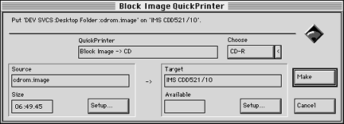

To master the CD-ROM disc, follow these steps:
The window shown in the figure below appears:

Figure 1: QuickTOPiX dialog for creating a block image creation.
The cdrom.image file is recorded to disc.
The QuickTOPiX status window appears and reports the progress of the mastering process. The transfer rate should be between 295 KB/s and 300 KB/s. When the process is finished, "Ready" appears in the status window.
Caution: On most recorders, the drawer opens when the process is complete. Do not open the drawer too soon yourself. The Writing light turns off once, then turns on as the lead data is written.